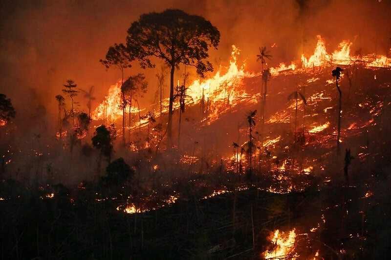

A Importância das Plantas no Ecossistema
Explorando os Fascinantes Métodos de Reprodução das Plantas e Sua Importância Ecológica

As Plantas e o Ecossistema
As plantas são essenciais para a vida na Terra, sendo responsáveis por gerar oxigênio, alimento, fibras, combustíveis e remédios que permitem aos humanos e outras formas de vida existirem. Elas também são essenciais para o controle da temperatura da Terra e o equilíbrio da água no planeta.
Enquanto realizam tudo isso, as plantas ainda absorvem dióxido de carbono, um importante gás do efeito estufa, através do processo de fotossíntese.
Agricultura e a Biodiversidade
Desde os primórdios da humanidade, o homem criou o “hábito” de coletar sementes e plantar, o que evoluiu para o que conhecemos hoje como agricultura. A agricultura é a base da subsistência e da economia global, além de ser crucial para a produção de alimentos.
Toda a cadeia alimentar depende das plantas, inclusive os animais de criação, como o gado, que consomem vegetação. Em outras palavras, plantas são a base de quase todas as teias alimentares, ou como os ecólogos chamam, o nível trófico básico.
Sem contar na questão da biodiversidade: "As plantas, por exemplo, são a base de toda a cadeia alimentar, além de servirem de moradia para várias espécies e fornecerem oxigênio no processo de fotossíntese. Quando uma espécie entra em extinção, todo o ecossistema local é impactado."
Ecossistemas Equilibrados e Sua Destruição
Um ecossistema equilibrado é aquele em que há harmonia entre os seres vivos e o ambiente, com todos os elementos funcionando em conjunto para manter o equilíbrio da biodiversidade e dos ciclos naturais.
Infelizmente, práticas humanas como desmatamento e queimadas têm causado impactos ambientais devastadores, ameaçando esses ecossistemas. Esse processo não só prejudica o meio ambiente, mas também impacta diretamente a sociedade humana.